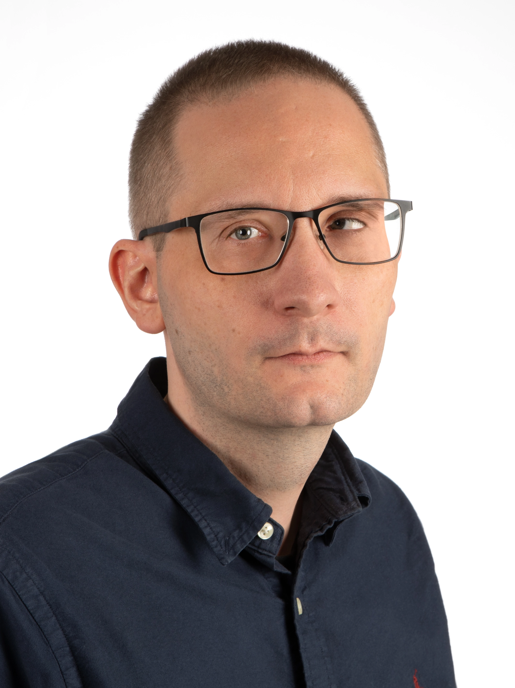

Velkomin!
Ég heiti Unnar Freyr Hlynsson og þetta er heimasíða sem var unnin sem verkefni í forritunarnámi hjá NTV. Hún lætur ekki mikið yfir sér, en er einungis unnin í hreinu HTML.

Ég heiti Unnar Freyr Hlynsson og þetta er heimasíða sem var unnin sem verkefni í forritunarnámi hjá NTV. Hún lætur ekki mikið yfir sér, en er einungis unnin í hreinu HTML.